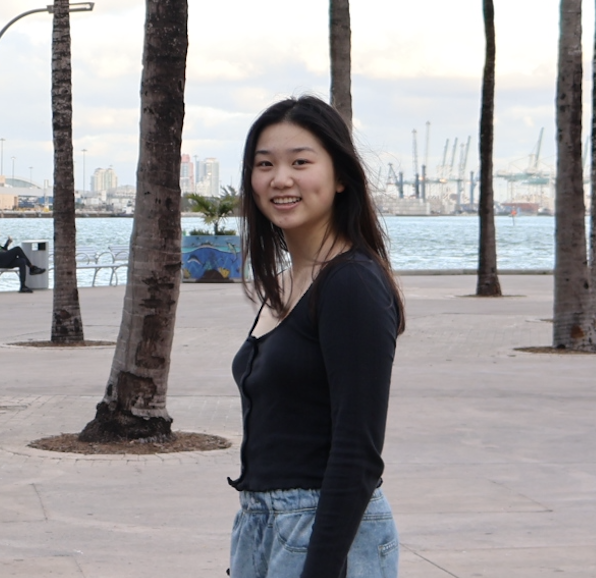
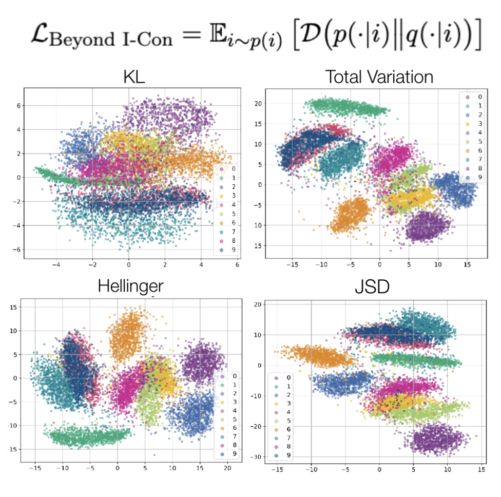
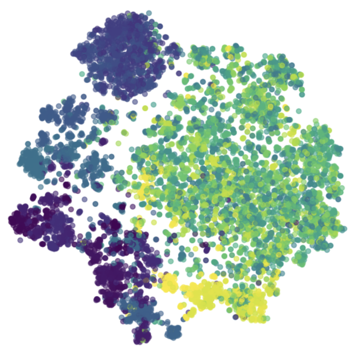
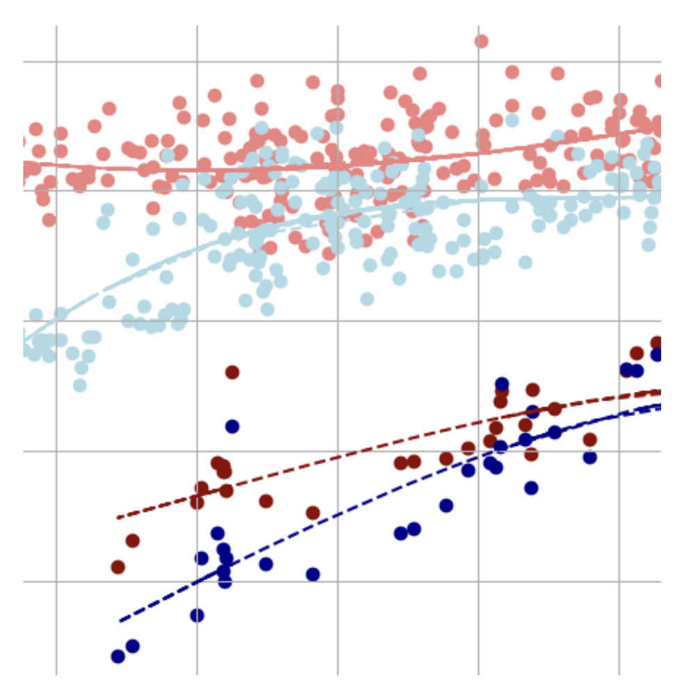
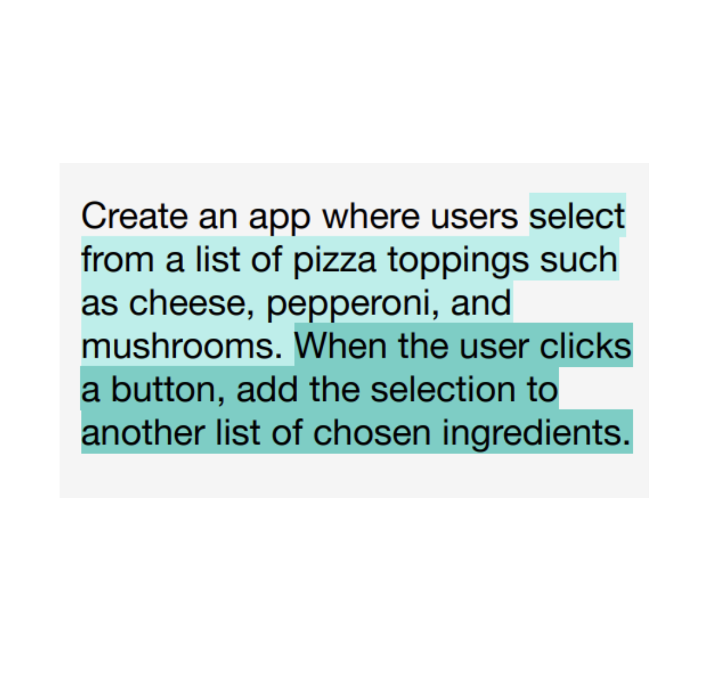
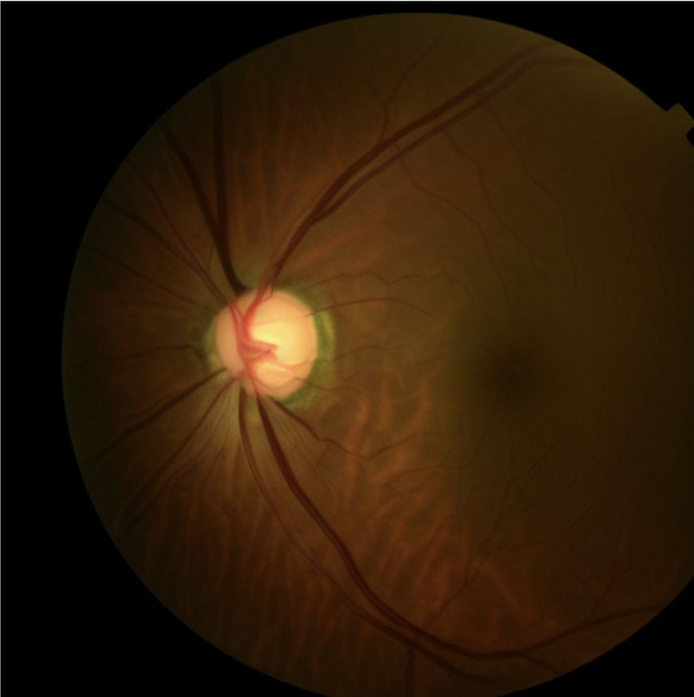
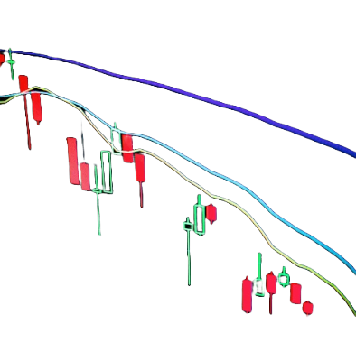
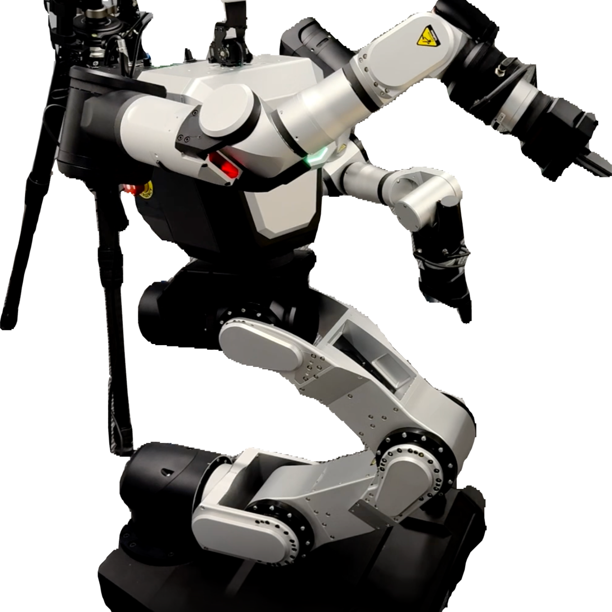

Jasmine Shone
Hi! I'm Jasmine Shone, a current student at MIT. This summer, I was a SWE Intern at Meta working on a computer vision model launch at Meta Superintelligence Labs and large-scale load testing at Instagram.
I am currently researching at the Kaiming He Lab, focusing on effective tokenization/representations for large scale chaotic system data in combination with latent diffusion models. I'm one of the co-leads for AI @ MIT Reading Group.

Research

Diffusion for PDEs
Modeling cool physics
SAM 3D @ Meta Superintelligence
2D to 3D objects!

Beyond I-Con: Exploring a New Dimension of Distance Measures
We extend the I-Con framework to discover new losses which achieve state-of-the-art results on clustering and supervised contrastive learning.

Text-Invariant Similarity Learning
We create a new paradigm of image-pair similarity learning conditioned on text descriptions.
Keypoint Abstraction using Large Models for Object-Relative Imitation Learning
Utilizing priors from Vision-language models and image features to generalize effectively across object poses, camera viewpoints, and object instances with only 10 demonstrations.
Created and designed keypoint proposal pipeline with specialized VLM prompting SAM, furthest point sampling, mark-based prompting, RANSAC, and point cloud clustering

The Correlation of Regional Gas Prices with Unemployment
Are fluctuations in gas prices predictive of unemployment rates and how do regional differences in mass transit and gasoline production affect this trend?
SketchAgent: Language-Driven Sequential Sketch Generation
We introduce SketchAgent, a novel framework for generating sequential sketches from language prompts.

Systematic Optimization of App Generation Few Shot Learning
We create an LLM in-context learning pipeline to systematically optimize prompt token length, few-shot selection, and ordering.

Stable Diffusion on Glaucoma Fundus Images in Low-Data Settings
We improve stable diffusion's ability to generate high-quality fundus images by finetuning on an extremely small dataset of 170 images.
Experience

Meta / SWE Intern
Meta Superintelligence Labs (Vision Model Launch) & Instagram (Load Testing).

Hudson River Trading / Core SWE & Algo Intern
Built C++ infra for live trading; Deployed profitable trading bot for Brazilian equities.

MIT LIS Lab / Research Assistant
Robotics generalization research using keypoint abstraction.
Awards
- 2025 Neo Finalist
- 2024 HackMIT Challenge Track Winner
- 2024 Citadel Women's Datathon First Place Report
- 2023 Atlas Fellow & Regeneron STS Scholar
- 2022 RSI Scholar
- 2022 Scholastic Arts and Writing National Gold/Silver
- 2022 NSDA Debate National Runner Up